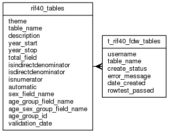

| Table: rif40.t_rif40_fdw_tables | |||
| RIF numerator tables which are Foreign data wrappers in Postgres | |||
| Size: medium, Select frequency: medium, Update frequency: medium | |||
| Columns | |||
| Name | Type | Constraints | Description |
| username | VARCHAR (90) | User name | |
| table_name | VARCHAR (30) | NOT NULL | RIF table name. Normally the schema owner will not be able to see the health data tables, so no error is raised if the table cannot be resolved to an acceisble object. The schema owner must have access to automatic indirect standardisation denominators. |
| create_status | VARCHAR (1) | NOT NULL | Create status: C (Created, no errors), E(Created, errors in test SELECT), N(Not created, errors) |
| error_message | VARCHAR (300) | Error message when create status is: E(Created, errors in test SELECT, N(Not created, errors) | |
| date_created | TIMESTAMP | Date FDW table created (or attempted to be) | |
| rowtest_passed | SMALLINT | SELECT rowtest passed (0/1) | |
| Primary key | |||
| Name | Columns | Description | |
| t_rif40_fdw_tables_pk | table_name | ||
| Foreign keys | |||
| Name | Columns | Referenced table | Description |
| t_rif40_fdw_tables_tn_fk | table_name | rif40_tables | |
| Grants | |||
| Role | Actions | ||
| rif_manager | select, insert, delete, update | ||
| rif_user | select, insert, delete, update | ||
| rif40 | select, references, insert, delete, update | ||
| PUBLIC | select, references | ||
